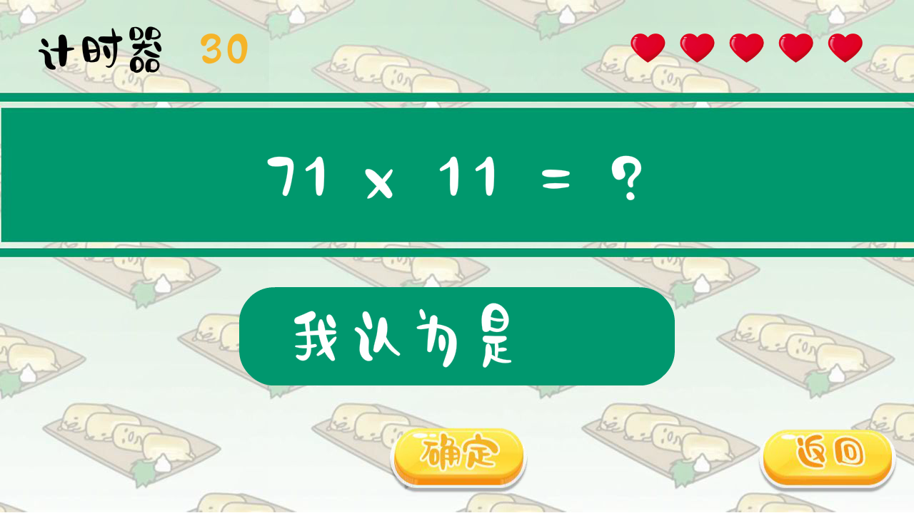

概述 ：蛋黄哥学算术是一个面向儿童的益智型算术小游戏，游戏共有三个难度：入门级、一般级和大师级，可供不同水平阶段的儿童进行算术练习。
类型 ：面向儿童的益智算术小游戏
1. 游戏介绍 1.1 游戏内容 本游戏以蛋黄哥（懒蛋蛋）为游戏主角，以小学生为游戏对象加入三种不同难度的算术题：10以内的加减法、100以内的加减法和100以内的乘除法。玩家在点击开始选择难度后进入游戏，开始计时。玩家需要根据屏幕上随机生成的等式在下方的输入框内输入答案并点击确定按钮；每局游戏都有相应的计时器，生命值，在规定时间内生命值为零则视为游戏失败，进入失败界面；若在规定时间内未作答或未耗尽生命值则进入超时界面之后跳转至失败界面；只有在规定的时间内在不耗尽生命值的情况下正确答题方才算成功。
1.2 流程结构
1.3 作品的视觉设计
2.游戏的技术实现 2.1 页面之间的主要跳转方式 2.1.1 通过跳转至场景的方式实现不同页面的切换
1 2 3 4 5 button_3.addEventListener(MouseEvent.CLICK, fl_ClickToGoToScene_2); function fl_ClickToGoToScene_2 (event:MouseEvent ):void MovieClip(this .root).gotoAndPlay(1 , "场景 1" ); }
2.1.2 通过跳转至不同帧的方式实现不同页面的切换
1 2 3 4 5 nd3.addEventListener(MouseEvent.CLICK, fl_ClickToGoToAndStopAtFrame_15); function fl_ClickToGoToAndStopAtFrame_15 (event:MouseEvent ):void gotoAndStop(4 ); }
2.2 通过函数显示对象 延时添加至舞台
1 2 3 4 5 6 7 8 9 10 11 12 13 14 var interval:uint=200 ;var myTimer8:Timer=new Timer(interval);myTimer8.addEventListener(TimerEvent.TIMER, timerHandler); myTimer8.start(); var play1:playbtn=new playbtn();function timerHandler (event:TimerEvent ):void var t:Number =myTimer8.currentCount/10 ; if (t == 1.2 ) { myTimer8.stop(); play1.x= 640 ; play1.y= 360 ; addChild(play1); } }
2.3 视频的播放 跳转至帧并播放视频
1 2 3 4 5 function ClickToGoToAndStopAtFrame_5 (event:MouseEvent ):void gotoAndStop(5 ); video1.play(); }
2.4 场景的背景音乐
2.5 按钮音效
2.6 场景的连续播放 通过添加计时器在该帧播放完后跳转到另一帧
1 2 3 4 5 6 7 8 9 10 11 var interval:uint=200 ;var myTimer2:Timer=new Timer(interval);myTimer2.addEventListener(TimerEvent.TIMER, timerHandler); myTimer2.start(); function timerHandler (event:TimerEvent ):void var t:Number =myTimer2.currentCount/10 ; if (t == 1.2 ) { myTimer.stop(); gotoAndStop(2 ); } }
2.7 生命条 通过生命条影片剪辑元件跳到下一帧并减少1个生命值
1 2 3 4 5 6 7 8 9 10 11 12 13 14 function define_f (event:MouseEvent ):void num3in = Number (num3.text); if (num3in == num3temp){ myTimer.stop(); gotoAndStop(3 ); }else { lifebar.nextFrame(); num3.text = "" ; life --; if (life == 0 ){ myTimer.stop(); gotoAndStop(2 ); } }
2.8 游戏主题的实现

2.9 功能的实现 1 2 3 4 5 6 7 8 9 10 11 12 13 14 15 16 17 18 19 20 21 22 23 24 25 26 27 28 29 30 31 32 33 34 35 36 37 38 39 40 41 42 43 44 45 46 47 48 49 50 51 52 53 54 55 56 57 stop (); var myTimer:Timer = new Timer(1000 ,60 );myTimer.addEventListener(TimerEvent.TIMER, timefun); myTimer.start(); var time:Number =30 ;var timetemp:Number =time;timer.text=String (time); function timefun (the:TimerEvent ):void time-=1 ; timer.text=String (time); if (time == 0 ){ myTimer.stop(); gotoAndStop(4 ); }} var num1temp :Number ;var num2temp :Number ;var num3temp :int;var num3in:Number ;var life:Number ;var numhow:Number ;var num3ch:Number ;life = 5 ; do {num1temp =int(Math .random()*100 )+1 ; num2temp =int(Math .random()*100 )+1 ; numhow = int(Math .random()*10 )+1 ; if (numhow > 5 ){ how.text = 'x' ; num3temp = num1temp * num2temp; num3ch =0 ; } else { how.text = '÷' ; num3temp = num1temp / num2temp; num3ch = (num3temp*num2temp)-num1temp; } }while (num3ch != 0 ); num1.text = String (num1temp); num2.text = String (num2temp); define.addEventListener(MouseEvent.CLICK,define_f); function define_f (event:MouseEvent ):void num3in = Number (num3.text); if (num3in == num3temp){ myTimer.stop(); gotoAndStop(3 ); }else { lifebar.nextFrame(); num3.text = "" ; life --; if (life == 0 ){ myTimer.stop(); gotoAndStop(2 ); } } }
3.工作分析和总结 3.1 遇到的问题及解决
运行时帧的不断切换播放（通过stop();解决）
编译器空对象错误（计时器等在跳转帧时未停止，视频未停止，通过停止后解决）
随机生成的运算符号不显示（随机数生成的结果没有完整的考虑在选择结构中）